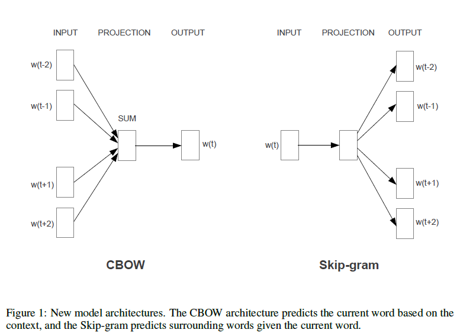

word embedding
word embedding 是文本表示的一类方法，将「不可计算」「非结构化」的词转化为「可计算」「结构化」的向量。
这种方法有几个明显的优势：
- 他可以将文本通过一个低维向量来表达，不像 one-hot 那么长。
- 语意相似的词在向量空间上也会比较相近。
- 通用性很强，可以用在不同的任务中。
神经概率语言模型
神经网络语言模型的提出解决了N-gram模型当𝑛较大时会发生数据稀疏的问题。与N-gram语言模型相同，神经网络语言模型（NNLM）也是对𝑛元语言模型进行建模，估计$P(x_i|x_{x-n+1},x_{x-n+2},…,x_{i-1})$的概率，与统计语言模型不同的是，神经网络语言模型不通过计数的方法对𝑛元条件概率进行估计，而是直接通过一个神经网络对其建模求解。
语言模型的的训练样本：$(Context(w),w)$

神经网络语言模型的结构入上图所示，可以分为输入层、投影层、隐藏层和输出层：
- 输入层：词$x$的上下文，如果用N-gram的方法就是词$x$的前$n−1$个词了。每一个词都作为一个长度为$V$的one-hot向量传入神经网络中。
- 投影层:投影层也叫embedding层，在投影层中，存在一个look-up表$C$，$C$被表示成一个$V∗m$的自由参数矩阵，其中$V$是词典的大小，而$m$代表每个词投影后的维度。表$C$中每一行都作为一个词向量存在，这个词向量可以理解为每一个词的另一种分布式表示。每一个one-hot向量都经过表$C$的转化变成一个词向量。$n−1$个词向量首尾相接的拼起来，转化为$(n−1)m$的列向量输入到下一层。
- 隐藏层：隐藏层的作用是进行非线性变换。$𝑧=𝑡𝑎𝑛ℎ(𝑊𝑋+𝑏)$
- 输出层：用softmax进行概率计算，计算词表$V$的每个词的概率。$𝑃(𝑥_𝑖)=𝑠𝑜𝑓𝑡𝑚𝑎𝑥(𝑧)$
函数$F(w,Context(w),\theta)$中待确定的参数代表以下两个方面：
-
词向量：$v(w) \in R^m, w \in C$以及填充向量
-
神经网络的参数：权重参数$W、U$和偏置参数$p、q$
$W \in R^{n_h \times (n-1)m}$
$p \in R^{n_h}$
$U \in R^{V \times n_h}$
$q \in R^V$
词向量在神经概率语言模型中扮演的角色：训练时，它用来帮助构造目标函数的辅助参数，训练完成后，它只是语言模型的一个副产品。
Word2Vec
word2vec中到的两个重要模型：
- **CBOW模型（Continuous Bag-of-Words Model）：**已知上下文$w_{t-2},w_{t-1},w_{t+1},w{t+2}$的前提下，预测当前词$w_t$
- **Skip-gram模型（Continuous Skip-gram Model)：**已知当前词$w_t$的前提下，预测上下文$w_{t-2},w_{t-1},w_{t+1},w_{t+2}$

基于Hierarchical Softmax的模型
- Huffman树
基于Negative Sampling的模型
随机负采样